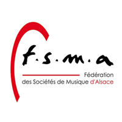

Programme du concert
1ère partie
Compostela
Thierry DELERUYELLE
Leonardo Dreams
Saoul GOMEZ SOLAR
Natalia
Antonio PUJOL
2ème partie
Symphonie N°1 "New Day Rising"
1er mouvement : City of Gold - Steven REINECKE
The Old Fortress of Luxembourg
Georges SADELER
Beyond the Horizon
3ème mouvement : Yamato, the Battleship - Satoshi YAGISAWA
L'Orchestre
Cet orchestre a été créé en 1880 sous la dénomination fanfare « HARMONIE » Bischheim. Restructuré en 1965, par la fusion avec l'harmonie « LYRA », son fonctionnement actuel date de 1997, par la mise en place d'une étroite collaboration avec l'Ecole Municipale de Musique et de Danse de Bischheim.
Composé d'une cinquantaine d'instrumentistes, essentiellement amateurs, l'orchestre, sous la direction de Romuald JALLET, également professeur à l'École Municipale de Musique et de Danse de Bischheim, comprend des bois, des cuivres, et, particularité de cet orchestre, un pupitre de violoncelles ainsi qu'une contrebasse à cordes. Un ensemble riche de percussions complète l'ensemble. En fonction des programmes, une harpe et un piano viennent s'ajouter à l'effectif.
La collaboration avec l'école de musique, dont certains professeurs font fonction de 1er pupitres, permet à l'orchestre de maintenir à la fois une présence assidue des musiciens, régulièrement alimentée par des élèves de l'EMMDB. Cette collaboration permet également à l'Harmonie de maintenir un niveau d'excellence musicale, puisque l'orchestre est monté à nouveau en Division d'Honneur (la plus haute division pour ce type d'orchestre) en 2010 avec les félicitations du jury, confirmé en 2014 (avec 19/20 et la mention "représentation internationale").
Harmonie de la ville de Bischheim, l'orchestre d'harmonie participe à la vie culturelle bischheimoise en participant aux cérémonies commémoratives des 8 mai et 11 novembre, en proposant des concerts dans le cadre de Noël ou de la fête de la musique.
Chaque année, l'orchestre donne également différents concerts annuels dans diverses salles dans l'agglomération strasbourgeoise et à l'extérieur de l'Eurométropole, avec parfois des invités de marque.
Cette année, l'Harmonie Bischheim et son chef ont le plaisir de se placer sous la direction du chef espagnol, Antonio PUJOL. Ensemble, ils vous offrent, en première partie, un petit aperçu de la musique orphéonique vue d'Espagne.
Antonio PUJOL

Romuald JALLET

Concertiste, chef d’orchestre, arrangeur, professeur Diplôme d'Etat de clarinette, Romuald Jallet est professeur de clarinette et de pratique collective à l’EMMD de Bischheim depuis 1993.
Parallèlement à sa vocation d'enseignant, il poursuit une carrière de concertiste, tant en qualité de soliste que de chambriste, qui l’amène à jouer en France et en Europe (Portugal, Hongrie, Luxembourg, Allemagne, Autriche, Espagne), Il se produit régulièrement en orchestre (KEKS,OPS, Orchestre de chambre Albert Schweitzer, Les Musiciens d'Europe...) sous la direction de grands chefs tel que Théodor Guschelbauer, Jan Latham Koenig, Jerzy Semkow, Pascal Rophé, Olivier Dejour, Philippe Cambreling et Gabriel Mattei.
Sa curiosité l’amène à explorer différentes esthétiques musicales, du baroque à la musique contemporaine en passant par le jazz. C’est ainsi qu’en 2016, il fait, avec le Big Band de Bischheim, la création française du Concerto pour clarinette et Big Band du jeune compositeur québécois Arnaud Allaury. Durant de nombreuses années, il a participé au Festival de musique d'aujourd'hui de Strasbourg MUSICA, travaillant en collaboration avec divers compositeurs tel que Gualtero Dazzi, Michèle Reverdy, Lucas Francesconi, Ivan Fedele, George Aperghis.
Son attirance pour la musique de chambre et les répertoires intimistes le pousse tout naturellement à fonder en 1999, le quatuor de clarinettes «Galanta» et en 2018 l’Octuor à vents «Auentos».
En qualité de chef d’orchestre, il fait ses débuts en prenant la direction de l’Orchestre d’Harmonie de Lembach de 1996 à 1998. Ensuite, il fait la création et l’enregistrement d’un cycle d’œuvres, Après l’hiver, de Grégory Toucas, compositeur alsacien (1998). En 2000, il prend la direction de l’orchestre d’harmonie de l’EMMD de Bischheim. Il crée la même année le Chœur de Clarinettes de Bischheim qu’il dirige toujours. C’est en septembre 2024 qu’il prend la direction de l’Harmonie Bischheim, succédant ainsi à Aimé Bastian.
Nos Partenaires
